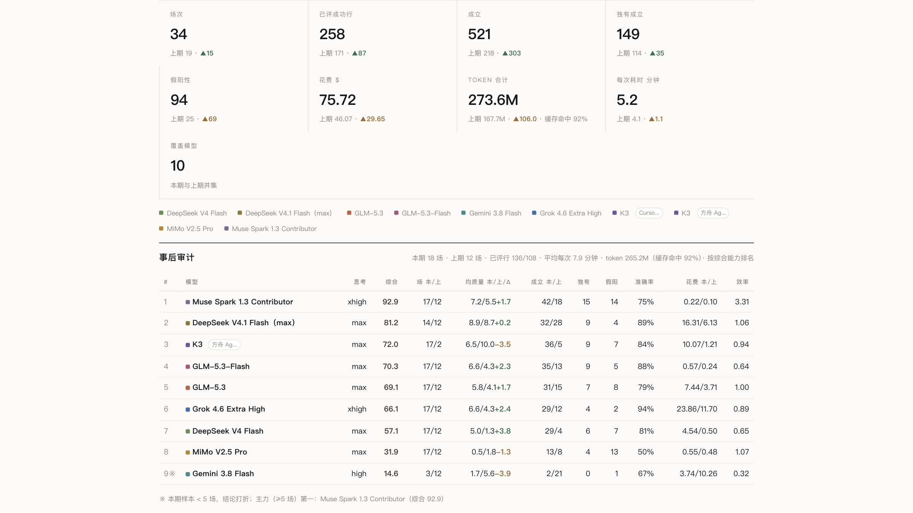
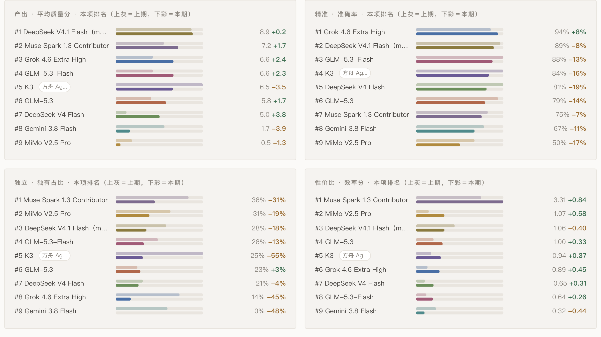
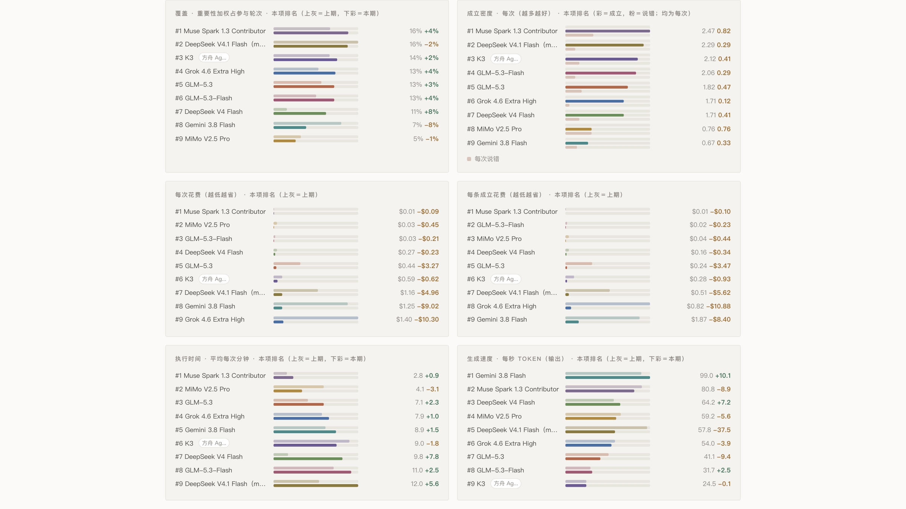
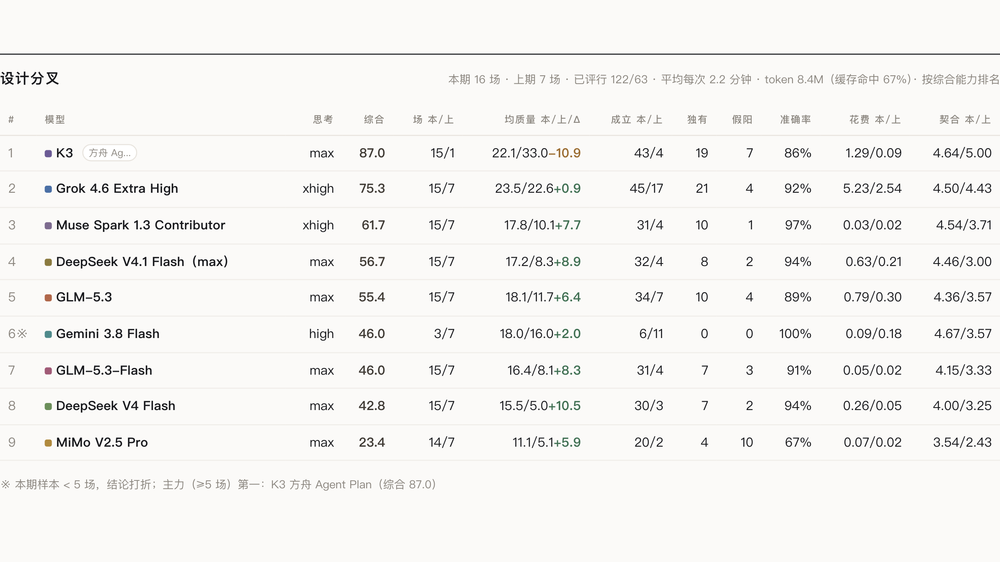

2026-W382026 年第 38 周
2026-09-14 → 2026-09-16（环比 2026-09-12 → 2026-09-14）
事后审计 18 场 · 成立 249 · 假阳 61 · 花费 $67.30
1 Muse Spark 1.3 Contributor 92.9、2 DeepSeek V4.1 Flash（max） 81.2、3 K3 方舟 Agent Plan 72.0
设计分叉 16 场 · 成立 272 · 假阳 33 · 花费 $8.43
1 K3 方舟 Agent Plan 87.0、2 Grok 4.6 Extra High 75.3、3 Muse Spark 1.3 Contributor 61.7



